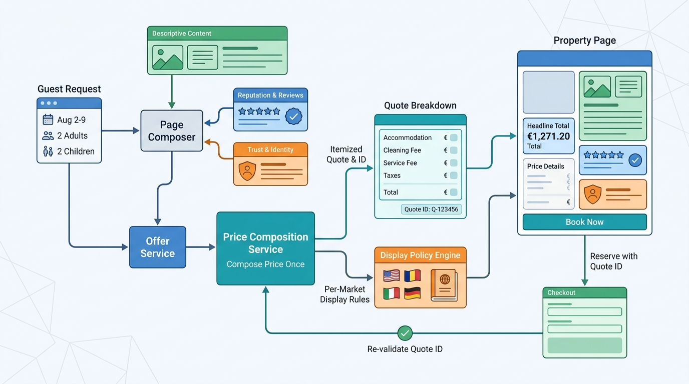

Part IV — DISCOVERY: From Intent to Bookable Stay
The Moment of Decision: Property Pages, Room Selection and Total Price

Image generated by Google Gemini (gemini-3-pro-image-preview)
Part IV — DISCOVERY: From Intent to Bookable Stay

Image generated by Google Gemini (gemini-3-pro-image-preview)